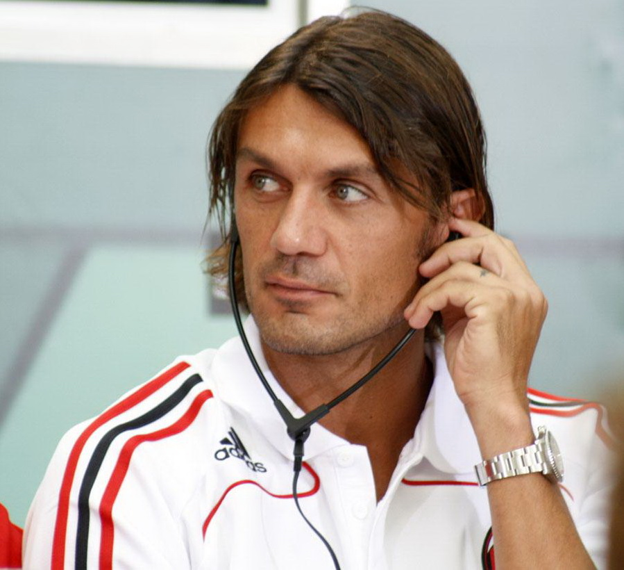
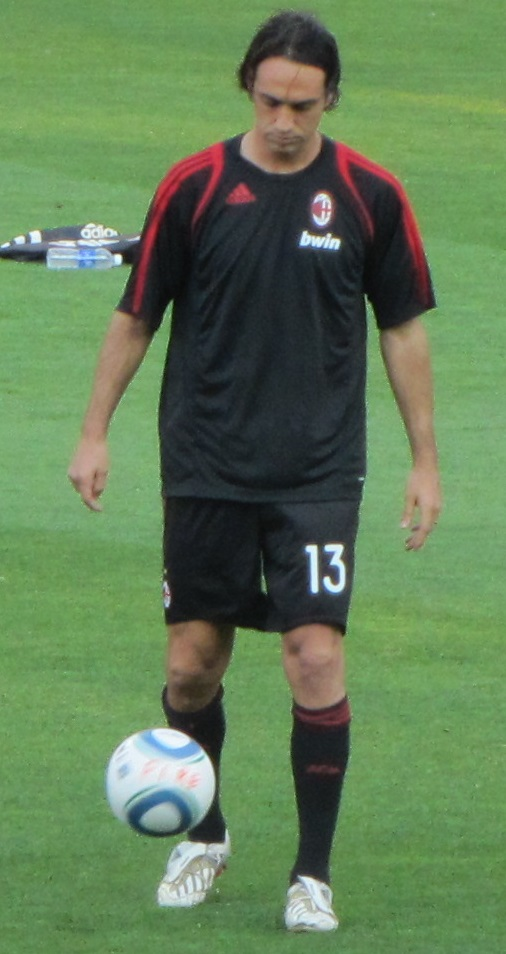
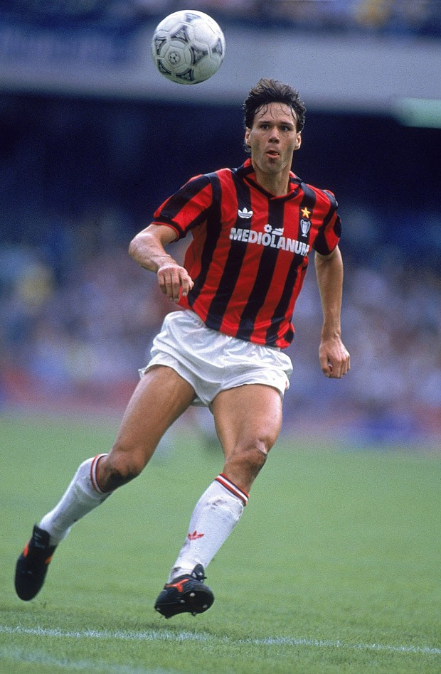
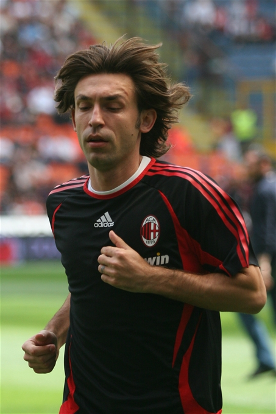
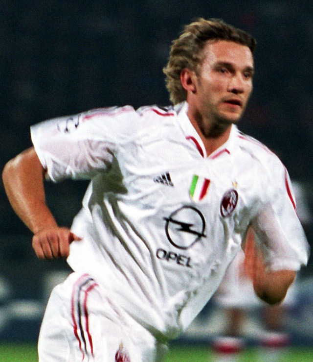
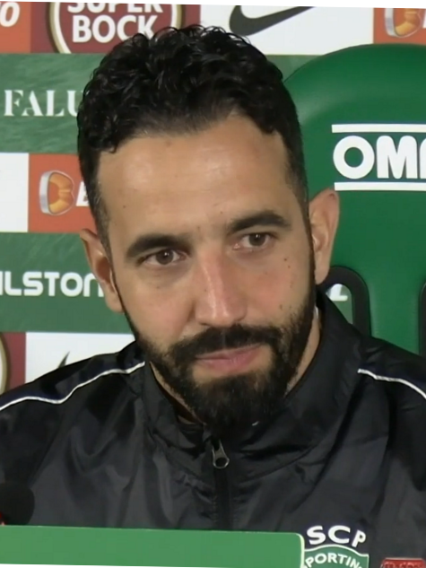
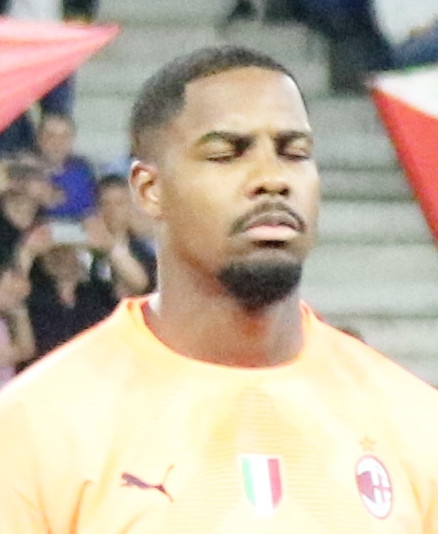
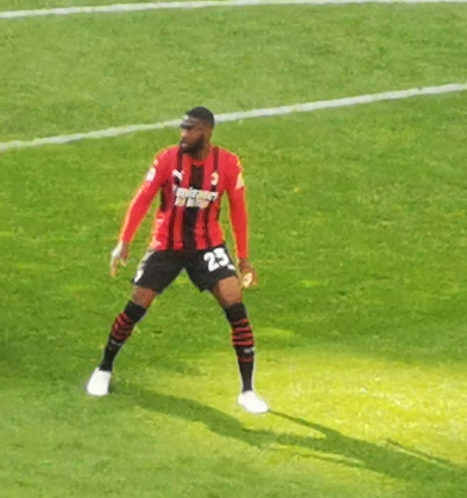
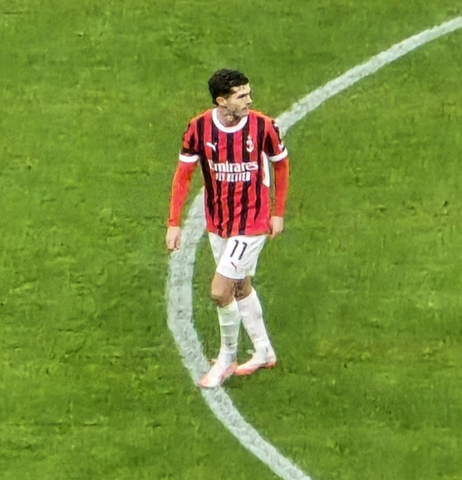

クラブ概要
ACミラン（Associazione Calcio Milan）は、イタリア北部の大都市ミラノを本拠地とするプロサッカークラブです。赤と黒の縦縞のユニフォームから「ロッソネリ」、悪魔の愛称から「イル・ディアボロ（悪魔）」とも呼ばれます。
（チャンピオンズカップ／CL）
| 正式名称 | Associazione Calcio Milan |
|---|---|
| 本拠地 | ミラノ（イタリア） |
| チームカラー | 赤・黒 |
| ホームスタジアム | サン・シーロ（ジュゼッペ・メアッツァ） |
| リーグ | セリエA |
歴史
- 1899年 イングランド人らによって「ミラン・フットボール・アンド・クリケット・クラブ」として創設。
- 1960年代 1963年、イタリア勢として初めて欧州チャンピオンズカップを制覇。1969年にも優勝。
- 1980年代後半〜90年代 アリゴ・サッキ監督、ファビオ・カペッロ監督のもと黄金期。ファン・バステン、フリット、ライカールトの「オランダ トリオ」が活躍し、1989・1990年に連覇。
- 2000年代 アンチェロッティ監督のもと、2003年・2007年にチャンピオンズリーグ制覇。
- 2010年代〜 低迷期を経て再建。2021-22シーズンに11年ぶりのセリエA優勝（19回目）を果たす。
レジェンド

パオロ・マルディーニ
DFミラン一筋で25年プレー。クラブの象徴的存在。

アレッサンドロ・ネスタ
DFエレガントな守備で知られたセンターバック。2003年・2007年のCL制覇に貢献。

マルコ・ファン・バステン
FWバロンドールを3度受賞した伝説のストライカー。

アンドレア・ピルロ
MF正確なパスで試合を操った司令塔。

カカ
MF2007年バロンドール受賞。華麗なドリブルで魅了。

アンドリー・シェフチェンコ
FW2004年バロンドール受賞のゴールマシン。
現在のチーム（2026-27シーズン）
2026年11月8日時点で、セリエA 11試合を終えて7勝3分1敗の4位（勝点24）です。
監督

ルベン・アモリム
監督（ポルトガル）2026年6月に就任。スポルティングCPでポルトガルリーグを2度制し、マンチェスター・ユナイテッドを経てミランへ。3バックの戦術で知られる。
注目の選手

マイク・メニャン
GK・16番・キャプテン（フランス）2021年にリールから加入。抜群の反射神経と足元の技術を持つ守護神。

フィカヨ・トモリ
DF・23番（イングランド）スピードを武器にするセンターバック。2021-22シーズンのリーグ優勝メンバー。

クリスチャン・プリシッチ
MF・11番（アメリカ）2023年にチェルシーから加入。ドリブルと得点力で攻撃を引っ張る。
選手一覧
| GK | 1 ピエトロ・テッラッチャーノ／16 マイク・メニャン／96 ロレンツォ・トッリアーニ |
|---|---|
| DF | 2 ペルビス・エストゥピニャン／5 コニ・デ・ウィンター／13 サンクン・ディアワラ／23 フィカヨ・トモリ／31 ストラヒニャ・パブロビッチ／33 ダビデ・バルテサーギ／34 マリオ・ヒラ／35 ヴァレリ・ヴラディミロフ／42 フィリッポ・テッラッチャーノ／46 マッテオ・ガッビア |
| MF | 8 ルーベン・ロフタス＝チーク／11 クリスチャン・プリシッチ／12 アドリアン・ラビオ／14 ルカ・モドリッチ／20 オマリ・ハッチンソン／22 ディエゴ・モレイラ／28 クリスティアン・コモット／30 アルドン・ヤシャリ／56 アレクシス・サレマーカーズ／70 アルファジョ・シッセ／80 ユヌス・ムサ |
| FW | 9 ゴンサロ・ラモス／21 サミュエル・チュクウェゼ／73 フランチェスコ・カマルダ |
選手一覧は AC Milan 公式サイトの掲載内容（2026年11月18日確認）にもとづきます。移籍などで変わることがあります。
ミラノ・ダービー
同じ街を本拠地とするインテルとの対戦は「デルビー・デッラ・マドンニーナ」と呼ばれ、世界屈指の注目カードです。スタジアムは両クラブで共用しており、試合ごとにスタンドが赤黒と青黒に染まります。
スタジアム：サン・シーロ
正式名称はスタディオ・ジュゼッペ・メアッツァ。約75,000人を収容し、世界で最も有名なサッカー場のひとつです。ミランとインテルが共用しており、ミランのホームゲームでは赤黒の大応援が響き渡ります。
出典
- AC Milan 公式サイト
- ACミラン - Wikipedia
- Lega Serie A 公式サイト
- UEFA 公式サイト
- AC Milan 公式サイト「Men's First Team」（選手一覧・監督、2026年11月18日閲覧）
- 2026–27 AC Milan season - Wikipedia（順位・成績、2026年11月18日閲覧）
- Ruben Amorim - Wikipedia（監督の経歴、2026年11月18日閲覧）
写真の出典（Wikimedia Commons）
- パオロ・マルディーニ：Рыбакова Елена（Elena Rybakova）撮影、PaoloMaldini 2008.jpg（CC BY-SA 3.0、元画像：soccer.ru）
- アレッサンドロ・ネスタ：goatling 撮影、Alessandro Nesta 2010.jpg（CC BY-SA 2.0）
- マルコ・ファン・バステン：撮影者不明、Marco van Basten 1990-1992.jpg（パブリックドメインとして登録）
- アンドレア・ピルロ：Roberto Vicario 撮影、Andrea Pirlo.jpg（CC BY-SA 3.0）
- カカ：gowestphoto 撮影、Kaka of AC Milan, April 19, 2009.jpg（CC BY 2.0）
- アンドリー・シェフチェンコ：Anastasiya Fedorenko 撮影、Andriy Shevchenko - 2004 - AC Milan (3).jpg（CC BY-SA 3.0）
- ルベン・アモリム：Agência Lusa 撮影、Ruben Amorim, January 2024 (cropped).png（CC BY 3.0、スポルティングCP監督時代）
- マイク・メニャン：Werner100359 撮影、Mike Maignan 2022 Salzburg vs AC Milan 2022-09-06.jpg（CC BY-SA 4.0）
- フィカヨ・トモリ：Saggittarius A 撮影、Tomori Milan 2022.jpg（CC BY-SA 4.0）
- クリスチャン・プリシッチ：Saggittarius A 撮影、Milan Cagliari 2025 - Pulisic.jpg（CC BY 4.0）
ライセンス：CC BY 3.0／CC BY-SA 3.0／CC BY 2.0／CC BY-SA 2.0／CC BY 4.0／CC BY-SA 4.0。写真は表示用にリサイズしています。